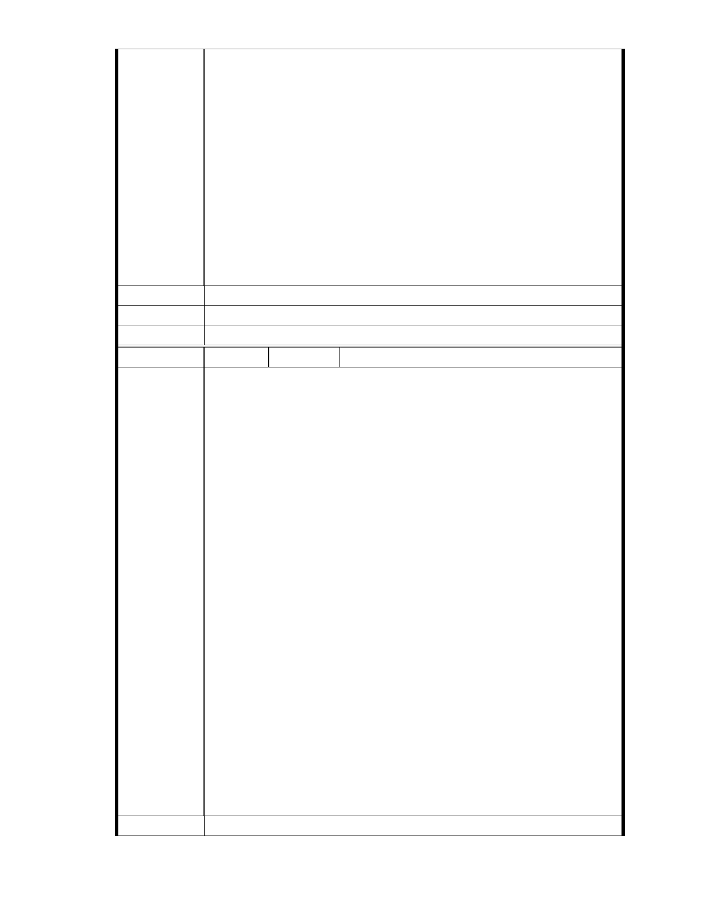

湖里安全，來的更直接更有保障！
現在慈濟要把水泥地建改成鑽石級的綠建築，以及 65 ％的綠地及滯洪
池，他們規劃了完善的排水設施，加上連鎖磚也有地表滲透的功能，我
相信這些對水土保持均有一定的效果！
我們住在內湖 20 年了，我們愛內湖，當然希望它更好！現在慈濟有心把
他們的地，整理得更環保，發揮更大的價值，我們實在找不到反對的理
由！我們認為這是內湖人的福氣，也是全人類的福氣！對於這件百利而
無一害的事情，我們當然舉雙手贊成，全力支持！
今天我特地來到會場，是因為不想再當沉默的大多數了！我希望相關單
位也能聽到民眾贊成的聲音·
建議辦法
市 府 說 明 相關陳情意見將納入本案審查人民意見，依法定程序辦理。
委 員 會 決 議 同編號 1。
編 號 255 陳情人 張新生
主席 各位委員 各位媒體朋友 各位關心內湖案的朋友：
大家好！我是內湖區居民，名叫張新生，對於內湖園區的變更及看法，
想請教各位委員，根據我所知道的內湖保護區不是為了保護生態、動植
物或特殊地區地貌而設，而是因為民國 56 年 7 月 1 日台北市升格為直轄
市，成為中華民國在台灣第一個直轄市。民國 57 年 7 且將分屬台北縣
的景美鎮、南港鎮、木柵鄉、內湖鄉暨陽明山管理局所屬之士林鎮、北
投鎮等六鄉鎮劃歸台北市管轄。
民國 58 年 3 月 9 日高玉樹市長時為配合全面實施都市平均地權，擬將景
美、木柵、南港、內湖四區行政區，暫時指定為保護區。擬一萬分之一
地形圖，完成後再視實際情形辦理都市計劃變更事宜。根據內湖區志：
民國六十五年二月十六日，台北市政府公告實施--大湖里附近面積約有
陳 情 理 由 24.30 公頃的都市細部計畫--解除禁建，建商雲集，剎時大興土木、住宅
大樓平地竄起
所以現在的大湖里與秀湖里社區也是由保護區解編而來。真不懂為何有
少數住在那裡的居民堅持保護區不能變更呢？保護區如果不能變更，大
湖里居民就不會住大湖里。為何大湖里可以，他們卻認為慈濟就不可以，
他們的標準在哪裡？
而我所看到的大湖附近幾乎都由保護區解編而來。如大湖山莊、大湖國
宅、大湖里。現在慈濟內湖園區也是在這裡的平地上，援用同樣保護區
變更法令依法申請變更，大家可以在作法與細節上仔細探討，我相信反
對人士可以唬弄不了解事情的網友，但影響不了專業的審查委員，也請
評審專家們挺起胸膛依法做出決定，實乃內湖社區居民之福，也是國家
社會之福，望各位委員三思！
建議辦法
- 299 -